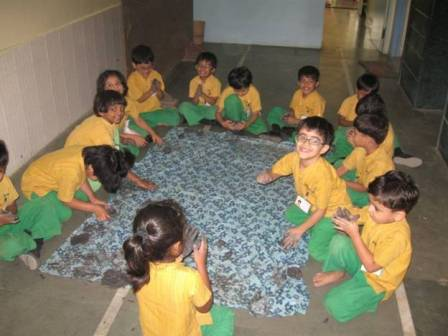
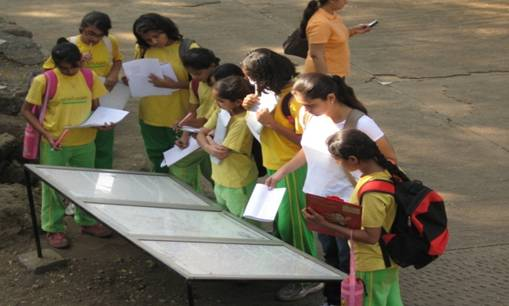
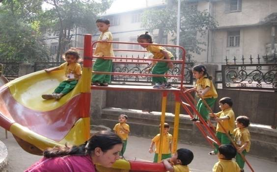
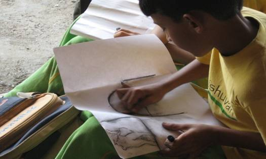

Shishuvan believes that every learner comes with a curriculum of her/his own. The school is an environment in which learners find the support for their learning. We trust and respect this purpose and provide the resources for the same, thereby keeping the onus of learning on the learner. We enjoy nurturing our students' curiosity, applauding their willingness to apply themselves in establishing and honing their skills. Additionally, we ensure socially relevant exposure to widen their contact with and perception of the world. Our students grow themselves into unique individuals, through the relationships they build with their teachers, peers, office and support staff, their social, political and aesthetic environment, classrooms, playing fields and homes, animate and inanimate objects, books, media and all other human beings. The teachers’ importance in the life of the students is invaluable. It is through them that students relate to the subject matter that forms their academic curriculum as well as to the value systems that sustain their soul’s journey through life. We realize, that only when learners seek knowledge, does it become possible for those from whom it is sought, to be teachers. We also know that the child is not always the learner, and the adult is not always the teacher. This understanding lends itself to the “Shishuvan pedagogy”: everyone participates in the building of a curriculum, in teaching and learning, since that is a human need. The school becomes a meaningful space – every child has a reason to be here, since they too have a say in what they wish to learn. There is no hierarchy in such a classroom; teachers and students call each other by their first names, listen to each other with the same level of respect, learn to experiment and innovate, take their own decisions and deal with the consequences, and take responsibility for their own learning. To revel in the spirit of community living, the school celebrates every festival by acknowledging the key message or rationale for the celebration, without the accompanying rituals. The assembly prayers include those of every community. The uniform is Khadi cotton in a unisex kurta and pant, that ensures the children are comfortable in indigenous attire, and establishes the equality of the sexes for the school. The cloth for the uniform is woven by a women’s co-operative, thereby supporting the livelihood of artisans. Such a pedagogy is challenging and exciting for the teacher. The school believes in providing lifelong learning to add value to teachers’ degrees and previous experiences. Parents also receive support through enriching and empowering workshops and individual sessions by the counselors and teachers. Shishuvan encourages the celebration of differences: we believe there is space in this universe for all individuals to express themselves, contribute, and live a full life.
Shishuvan believes that : Learning is a shared responsibility between students, teachers and parents. Learning should be meaningful, relevant, and life-long for the learner and teacher. The school should feed the child's innate curiosity, stimulate creativity and concern through actual hands-on, developmentally appropriate experience and reflection. All children can learn and different students may demonstrate learning in different ways. Based on this understanding and guided by the universal values of non-violence, tolerance and respect for the environment, Shishuvan shall strive to: Promote life-long learning and prepare all students to be responsible citizens and contributing members of society. Ensure the school is recognized for high scholastic, artistic and athletic achievements of its students. Attract and retain highly qualified, committed and motivated teachers and support staff through rigorous in-service training. Promote the understanding of cultural diversity and encourage respect for all religious and linguistic groups. Vision statement To be a world-class institution rooted in Indian culture that enables holistic development and empowers the students from all strata of society, along with stakeholders, deal with any global scenario. Mission statement Working together, optimize all resources including faculty, facilities and good governance towards developing excellence in students as well as skills to deal with changes.
  "The wearer of Khadi is like a man making use of his lungs. A natural and obligatory act has got to be performed, whether others do it out of impure motives or refrain altogether because they do not believe in its necessity or utility."
- M. K. Gandhi
With deference to the Mahatma's wishes, we at Shishuvan include a Khadi curriculum to enable students to understand and appreciate the production of Khadi cloth from which their uniform is made. The aim of the curriculum is to inculcate a respect for skilled labour and develop a meditative focus and attention in our students, in line withe Gandhi's nai talim". The teachers are from a voluntary Gandhian group : the Mumbai Sarvodaya Mandal. The unique corollary of teachers from this group is that it enables children to learn from elders that are the age of their grandparents or even older!
Level 1: Every student has to spin 1000 metres of good quality thread on the Takli, before getting to level 2, which is the charkha.
Level 2: At the second level, the student spins 1000 metres of thread on the charkha
Every student weaves a towel-size cloth on a table-loom. Shishuvan is proud of its Khadi uniform in yellow and green, relating with our school symbol, the sunflower that turns its bright face to the sun at all times.
Unisex : The pant and kurta are worn by boys and girls, establishing their status as a STUDENT rather than emphasising their gender and giving the girls the same sense of freedom as the boys in their ability to sit, exercise, run and climb.
Design: The design of the uniform provides maximum coverage to the body, keeping away harsh sunlight, mosquitoes, and lending itself to rural field visits wherein children walk through grass. Over time, there develops a certain comfort with looking and feeling Indian.
Durable: To provide ease of maintenance to parents, 30% polyester was accepted as the minimal requirement to ensure colour fast cloth that is easy to wash and iron. Also, parents are advised on the detergents to be used and the process of washing and drying the uniform.
Climate appropriate: The uniform is 70% cotton thus making it sweat absorbent and making it easy for the skin to 'breathe'.
Supporting women's livelihood: The uniform is manufactured by a women's cooperative - “Udyog Bharati” at Gondal. The school has a unique relationship with the women who spin and weave the uniform cloth. Std V students visit Gondal every year, to meet these women, visit their homes and develop a social consciousness of how their uniform contributes to the monthly income of these economically deprived homes.
Quality focus: The choice of Udyog Bharati was based on its drive for quality as one of India's largest exporters of Khadi.
Teamwork: The uniform celebrates the coming together of Shishuvan, Udyog Bharati, TexLab - Ahmedabad and the Textiles department of Nirmala Niketan College, Mumbai, all driven by a strong determination and working on each ones' strengths and core competencies.
video of field trip to delhi